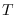

There are three textwindow classes, TextWindow, BufferTextWindow
and ScrollTextWindow.
textWindow [class]
:super xwindow
:slots (fontid
charwidth charheight charascent dots
win-row-max win-col-max
win-row win-col ;physical current position in window
x y
charbuf ; for charcode conversion
keybuf keycount ;for key input
echo
show-cursor cursor-on ;boolean
kill delete ;control character
notify-object notify-method
)
-
- realizes virtual terminals usable for displaying messages.
The displayed contents are not buffered and there is no way to retrieve
a line or a character already displayed in the TextWindow.
Basically, TextWindow has similar capabilities to the dumb terminals,
that are, moving the cursor, erasing lines, erasing areas,
scrolling displayed texts, inserting strings, etc.
Also, the text cursor can be moved to the position designated by
the mouse pointer.
:init id [method]
-
-
initializes idth text-window.

-
- creates text-window.
The sizes of the window may be specified either by width and height
or by rows and columns.
Notify-object's notify-method is invoked when a newline character
is typed in.
:cursor flag [method]
-
-
The flag can either be :on, :off or :toggle.
The text cursor is addressed by the win-row and win-col.
The text cursor is displayed if flag is :on,
is erased if flag is :off,
or is reversed if flag is :toggle.
This method must be invoked frequently
whenever the character at the cursor is updated.
:clear [method]
-
-
clears text-window.
:clear-eol &optional (r win-row) (c win-col) (csr :on) [method]
-
-
clears the rest of the line after the character
addressed by r and c, including the character at the cursor.
:clear-lines lines &optional (r win-row) [method]
-
-
clears multiple lines after r-th row.
:clear-eos &optional (r win-row) (c win-col) [method]
-
-
clears the region after the character addressed by r and c
till the end-of-the-screen.
:win-row-max [method]
-
- returns the maximum number of lines
displayable in this window.
:win-col-max [method]
-
- returns the maximum number of columns
displayable in this window.
:xy &optional (r win-row) (c win-col) [method]
-
-
calculates the pixel coordinates of the character
addressed by r and c.
:goto r c &optional (cursor :on) [method]
-
-
moves the cursor to r-th row and c-th column.
:goback &optional (csr :on) [method]
-
-
moves the cursor backward by one.
:advance &optional (n 1) [method]
-
-
moves the cursor forward by n characters.
:scroll &optional (n 1) [method]
-
-
scroll textwindow vertically by n lines.
:horizontal-scroll &optional (n 1) [method]
-
-
horizontally scrolls the text by n columns.
:newline [method]
-
-
moves cursor to the beginning of the next line.
:putch ch [method]
-
-
inserts the character ch at the cursor position.
The rest of the line is moved forward by one.
:putstring str &optional (e (length str)) [method]
-
-
places str at the cursor position.
:event-row event [method]
-
-
:event-col event [method]
-
-
returns the text cursor position designated by in the event.
:KeyPress event [method]
-
-
inserts the character entered at the cursor position.
If the character is newline, notification is sent to the notify-object.
textWindowStream [class]
:super stream
:slots (textwin)
-
- TextWindowStream is an output stream connected to a TextWindow.
Characters or strings output to this stream by using print, format,
write-byte, etc., are displayed in the textwindow.
As usual file streams, the output data are buffered.
:flush [method]
-
-
flushes buffered text string and send them to the textwindow.
Finish-output or writing a newline character to this stream
automatically calls this method.
make-text-window-stream xwin [function]
-
-
makes text-window-stream and returns the stream object.
BufferTextWindow [class]
:super TextWindow
:slots (linebuf expbuf max-line-length row col)
-
- maintains the line buffer representing the contents of the textwindow.
Linebuf is the vector of lines. Expbuf holds tab-expanded text.
Only lines displayable in the window are maintained.
BufferTextWindows can be used as simple text editors
which have several, often only one, lines of text.
Text-item employs a BufferTextWindow as a displayable line buffer.
:line n [method]
-
- returns the contents of the n-th line as a
string.
:nlines [method]
-
- returns number of lines in the linebuf.
:all-lines [method]
-
- returns the linebuf, which is a vector of strings.
:refresh-line &optional (r win-row) (c win-col) [method]
-
-
redraws the r-th line after the c-th column.
:refresh &optional (start 0) [method]
-
-
redraws the lines after the start-th line inclusively.
:insert-string string [method]
-
-
inserts string at the cursor position.
:insert ch [method]
-
- inserts the character at the cursor.
:delete n [method]
-
- deletes n characters after the cursor.
expand-tab src &optional (offset 0) [function]
-
-
Src is a string possibly containing tabs.
These tabs are replaced by spaces assuming the tab stops at every 8th
position.
ScrollTextWindow [class]
:super BufferTextWindow
:slots (top-row top-col ;display-starting position
scroll-bar-window
horizontal-scroll-bar-window
selected-line)
-
- ScrollTextWindow defines buffertextwindow with unlimited number of lines,
and vertical and horizontal scroll-bars can be attached.
ScrollTextWindow can handle :configureNotify event to resize
itself and accompanying scroll-bar windows, and to redisplay texts.
By clicking, a line can be selected.
:create &rest args
&key (scroll-bar nil)
(horizontal-scroll-bar nil)
&allow-other-keys [method]
-
-
When scroll-bars are needed, specify T to each keyword argument.
:locate n [method]
-
- displays the buffered text by placing the n-th
line at the top of the window.
:display-selection selection [method]
-
- Selection represents
the location of the selected line. The entire seleced line is displayed
highlighted.
:selection [method]
-
- returns the selected line (string).
:read-file fname [method]
-
- reads the textfile specified by fname
into the linebuf, expands tabs, and display in the window.
The cursor is put at the beginning of the screen.
:display-string strings [method]
-
- Strings is a sequence
of lines (strings). The strings are copied in the linebuf
and displayed in the window.
:scroll n [method]
-
- vertically scrolls n lines.
:horizontal-scroll n [method]
-
- horizontally scrolls n columns.
:buttonRelease event [method]
-
-
The line where the mouse pointer is located is selected.
If notification is specified when the window is created,
notify-object's notify-method is invoked.
:resize w h [method]
-
- changes the size of the window
and redisplays the contents according to the new size.
The same message is sent to scroll-bars if attached.
2016-03-23